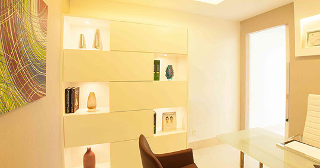

Tricoscopia digital
Exame indolor, com microscópio computadorizado, em que você vê o próprio couro cabeludo na tela junto com a médica. As imagens ficam registradas para comparar depois.
Dermatologista · CRM-BA 21882 · RQE 8828
A Dra. Juliana Pires é dermatologista com atuação em tricologia, a área que cuida do cabelo e do couro cabeludo. Na consulta, ela investiga a origem da queda com tricoscopia digital antes de indicar qualquer tratamento.
Por onde começar
Os tipos de queda, da passageira à calvície, e por que o diagnóstico vem primeiro.
Queda de cabeloPeleDoenças da pele tratadas com a mesma investigação cuidadosa.
Dermatologia clínicaEstéticaToxina botulínica, preenchimento, bioestimuladores e laser, com indicação criteriosa.
Dermatologia estéticaTricologia
Queda de cabelo pode ter muitas causas, e cada uma pede um caminho diferente. Por isso a consulta começa pela escuta, pelo histórico e pelo exame do couro cabeludo.
Exame indolor, com microscópio computadorizado, em que você vê o próprio couro cabeludo na tela junto com a médica. As imagens ficam registradas para comparar depois.
Alguns fios são retirados com pinça e a raiz é examinada ao microscópio. Ajuda a diferenciar os tipos de eflúvio.
Um fragmento bem pequeno, de 4 mm, retirado com anestesia local e examinado em laboratório.
MMP, intradermoterapia e, na alopecia areata, imunoterapia com difenciprona, quando indicados.
Nas palavras dela
“Destaco o uso da tricoscopia digital na minha prática diária, exame que permite que o paciente observe junto com o médico, em tempo real, o comprometimento de seus fios de cabelos e couro cabeludo.”
Dra. Juliana Pires
“Penso que, acima de tudo, o paciente precisa confiar em seu médico e ter a garantia que este profissional está capacitado para ajudá-lo.”
“O médico, por sua vez, deve acolher esse paciente com atenção e disposição, e oferecer-lhe o que a medicina tem de melhor e mais moderno.”
Tipos de queda
“É considerada normal uma perda de aproximadamente 150 fios de cabelo por dia.” Quando passa disso, ou quando o couro cabeludo começa a aparecer, é hora de investigar.
Dermatologia
Avaliações
Ouviu minhas queixas com muita empatia e sensibilidade. Ela se dedicou a entender meu histórico e explicou cada passo do diagnóstico de forma bem detalhada e clara.
Sempre explica tudo direitinho e é muito criteriosa em relação à indicação dos procedimentos, além de ser muito atenciosa, gentil e humana.
Uma profissional extremamente competente, atenciosa e sempre muito pontual. A sua dedicação e cuidado me trazem muita confiança, tanto para o tratamento da minha pele quanto do meu cabelo.
Sou paciente da Dra. Juliana há alguns anos e só tenho elogios para o seu trabalho. Além de estar sempre atualizada com os melhores procedimentos, é uma profissional muito acessível e atenciosa.
[…] Enfim, encontrei a Dra. Juliana Pires, que deu um show de atendimento, conhecimento e confiança! […] Super recomendo!
A Dra. Juliana é muito competente, tem habilidade técnica na execução dos procedimentos, além de empatia.
A dra. é muito atenciosa, pontual e um atendimento de excelência. […] Sempre tira todas as dúvidas.
Profissional experiente, com uma sólida formação acadêmica, transmitindo segurança e conforto ao paciente.
Ela escreve
São 19 textos no portal Dermatologia e Saúde, que só publica dermatologistas com título da Sociedade Brasileira de Dermatologia. Além deles, 53 respostas públicas a pacientes no Doctoralia.
Consultório
Ed. Boulevard Side Empresarial, sala 519Rua Ewerton Visco, 290 · Caminho das Árvores
Salvador · BA · 41820-022

Clínica Dermoplástica, fundada pela Dra. Juliana Pires e pelo Dr. Guilherme Brito. Prédio com estacionamento próprio, perto da Avenida Tancredo Neves.
Dúvidas frequentes
É um exame indolor que avalia os cabelos e o couro cabeludo com um microscópio computadorizado. Você vê o couro cabeludo na tela e entende melhor as explicações. As fotos servem para acompanhar a melhora com o tratamento.
Nem sempre. Algumas quedas são passageiras. A consulta serve para entender a causa e indicar, ou não, um tratamento.
“A calvície é um problema genético e não piora com tinturas.” Tinturas feitas de forma inadequada podem ressecar ou quebrar os fios, por isso vale usar produtos de qualidade.
O atendimento é particular. Para valores e horários, fale com a equipe pelo WhatsApp.
Primeira consulta
Atendimento de segunda a sexta, das 9h às 18h, no Caminho das Árvores.
Agendar pelo WhatsApp